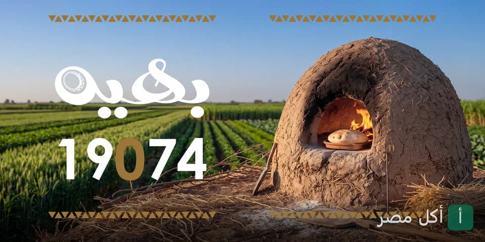

ميكس بهية
كباب / كفتة / طرب / سجق / كبده
490 جنيه
مشويات وأسماك على الأصول. اختار طلبك من المنيو وكلمنا.

الأسعار بالجنيه المصري من صفحة أكل مصر (آخر تحديث معلن: ١٠ نوفمبر ٢٠٢٦). أكد السعر مع المطعم عند الطلب.
كباب / كفتة / طرب / سجق / كبده
490 جنيه
نيفا / كفتة / شيش
360 جنيه
340 جم (كباب و كفتة و شيش)
475 جنيه
500 جم (كباب و كفتة و شيش)
360 جنيه
250 جم (كباب و كفتة) مع فرد حمام
475 جنيه
460 جنيه
515 جنيه
860 جنيه
460 جنيه
575 جنيه
ربع فراخ مشوي - كفتة
210 جنيه
135 جنيه
205 جنيه
2 كفتة و 3 شيش
210 جنيه
345 جنيه
حواوشي - كفتة - شيش
250 جنيه
تقدم مع خضار سوتيه
195 جنيه
140 جنيه
99 جنيه
1200 جنيه
465 جنيه
10 جنيه
55 جنيه
60 جنيه
49 جنيه
60 جنيه
105 جنيه
17 جنيه
28 جنيه
35 جنيه
35 جنيه
45 جنيه
39 جنيه
80 جنيه
28 جنيه
49 جنيه
39 جنيه
35 جنيه
60 جنيه
كفتة / كبدة / سجق / ممبار / مخاصي
280 جنيه
215 جنيه
445 جنيه
275 جنيه
205 جنيه
440 جنيه
325 جنيه
315 جنيه
محمر أو بالخلطة
450 جنيه
محمر أو مشوي
225 جنيه
محشي فريك
320 جنيه
50 جنيه
295 جنيه
335 جنيه
485 جنيه
490 جنيه
4350 جنيه
1785 جنيه
3300 جنيه
نص فراخ مع ملوخية و ورق عنب
385 جنيه
نص بط مع ملوخية و ورق عنب
530 جنيه
195 جنيه
140 جنيه
70 جنيه
55 جنيه
55 جنيه
55 جنيه
95 جنيه
85 جنيه
570 جنيه
570 جنيه
545 جنيه
650 جنيه
550 جنيه
470 جنيه
475 جنيه
395 جنيه
395 جنيه
395 جنيه
215 جنيه
220 جنيه
115 جنيه
110 جنيه
115 جنيه
110 جنيه
460 جنيه
320 جنيه
330 جنيه
305 جنيه
305 جنيه
305 جنيه
340 جنيه
445 جنيه
399 جنيه
145 جنيه
160 جنيه
345 جنيه
380 جنيه
ثلث 370 جنيهنصف 495 جنيهكيلو 1, 475 جنيه
نصف 530 جنيهكيلو 1, 575 جنيه
ثلث 250 جنيهنصف 335 جنيهكيلو 999 جنيه
ثلث 340 جنيهنصف 450 جنيهكيلو 1, 350 جنيه
ثلث 365 جنيهنصف 490 جنيهكيلو 1, 450 جنيه
ثلث 390 جنيهنصف 525 جنيهكيلو 1, 550 جنيه
ثلث 390 جنيهنصف 525 جنيهكيلو 1, 550 جنيه
ثلث 365 جنيهنصف 490 جنيهكيلو 1, 450 جنيه
ثلث 275 جنيهنصف 370 جنيهكيلو 1, 100 جنيه
نصف 420 جنيهكيلو 1, 250 جنيه
نصف 370 جنيهكيلو 1, 100 جنيه
ثلث 150 جنيهنصف 200 جنيهكيلو 600 جنيه
ثلث 175 جنيهنصف 235 جنيهكيلو 700 جنيه
ثلث 150 جنيهنصف 220 جنيهكيلو 600 جنيه
كيلو 1, 250 جنيه
429 جنيه
439 جنيه
42 جنيه
45 جنيه
75 جنيه
30 جنيه
225 جنيه
28 جنيه
25 جنيه
28 جنيه
28 جنيه
28 جنيه
28 جنيه
25 جنيه
55 جنيه
50 جنيه
85 جنيه
90 جنيه
85 جنيه
150 جنيه
105 جنيه
105 جنيه
99 جنيه
109 جنيه
99 جنيه
305 جنيه
320 جنيه
50 جنيه
39 جنيه
70 جنيه
105 جنيه
1.5 كيلو مشويات مشكلة (كباب + كفتة ضاني + طرب + شيش) + 1 حواوشي + تقدم مع ارز + 2 سلطة خضراء + 2 سلطة طحينة
1500 جنيه
فرخة مشوية أو شيش + نص كيلو كفتة ضاني + نص كيلو طرب + 1 حواوشي + 1/2 كيلو ممبار + ارز بسمتي + 2 سلطة خضراء + 2 سلطة طحينة + عيش
1650 جنيه
بطة محمرة + 4 فرد حمام محشي + طبق ورق عنب + طاجن بطاطس باللحمة مع الرقاق والملوخية
2150 جنيه
نص كيلو كفتة ضاني + نص كيلو طرب + نص كيلو كباب ضاني + نص كيلو سجق شرقي + نص كيلو ممبار + طاجن ارز معمر سادة + طاجن بطاطس باللحمة + كيلو ونص ارز بسمتي + سلطات
2800 جنيه
نص كيلو لحم بتلو + 2 فرد حمام + نص كيلو ورق عنب + محشي مشكل
1150 جنيه
نص كيلو لحم ماعز + 8 صباع كفته ضاني (600 جرام) + نص كيلو شيش طاووق + ربع كيلو كباب ضاني + ارز + 2 دقوس + خبز
1600 جنيه
كيلو ونص لحم ماعز + ارز بسمتي + 3 دقوس + خبز
1675 جنيه
كيلو لحم بلدي محمر مع أرز والخبز المحمر وصوص الفتة و ٢ مخلل
1050 جنيه
فرخة شيش + نص كيلو كفتة ضاني + نص كيلو ممبار + ١ ملوخية كبير تقدم مع ارز بسمتي + ٢ سلطة خضراء + ٢ باذنجان مخلل
1100 جنيه
نص كيلو كفتة ضاني + نص كيلو شيش ربع كيلو كباب + ربع كيلو ممبار تقدم مع أرز + ٢ سلطة خضراء + ٢ سلطة طحينة
1200 جنيه
كيلو شيش طاووق + نص كيلو كفتة ضاني + نص كيلو سجق شرقي + نص كيلو ممبار + ١ حواوشي + ارز بسمتي + ٢ سلطة خضراء + ٢ سلطة طحينة + عيش
1400 جنيه
كيلو ونص لحم بتلو + ارز بسمتي + ٣ دقوس + خبز
1350 جنيه
نص كيلو لحم بتلو + ٨ صباع كفته ضاني (٦٠٠ جرام) + نص كيلو شيش طاووق + نص كيلو ممبار + ارز + ٢ دقوس + خبز
1270 جنيه
نص كيلو لحم ماعز + نص فرخه مشويه + ٥ صباع كفته لحم (٣٧٥ جرام) + نص كيلو ممبار + ارز بسمتي + ٢ دقوس + خبز
1250 جنيه
الأصناف والأسعار من صفحة أكل مصر المنشورة. أكد تفاصيل طلبك والسعر مع المطعم عند الاتصال.